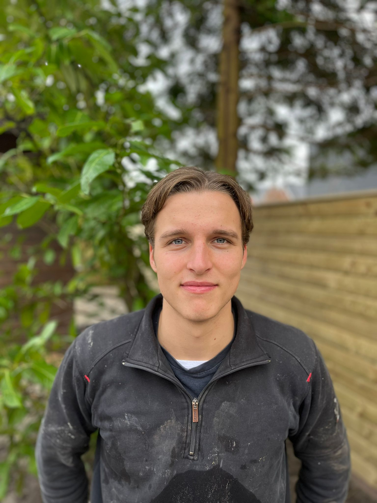

Persoonlijk contact, heldere communicatie en zichtbaar vakwerk vormen de basis van ieder project.

Persoonlijk en professioneel
Mijn naam is David van Kalkeren. Opgegroeid in een hoveniersfamilie draag ik het hoveniersvak al van jongs af aan met mij mee. Met passie, vakmanschap en oog voor detail realiseer ik dagelijks tuinen van hoogwaardige kwaliteit.
Elke opdracht wordt uitgevoerd met aandacht en precisie, zodat het resultaat volledig aansluit bij de gemaakte afspraken.